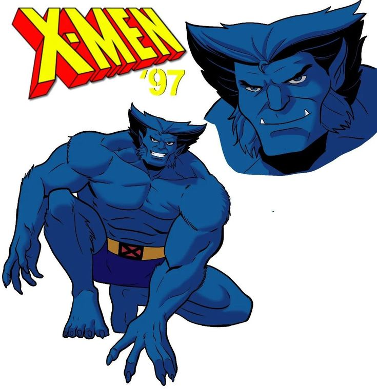

 Fera, ou Henry "Hank" McCoy, é um dos membros fundadores dos X-Men e um mutante com habilidades notáveis. Ele nasceu com características físicas incomuns, como mãos e pés grandes, e desde jovem demonstrou ser um prodígio intelectual. Inicialmente, seus poderes incluíam força e agilidade, além de habilidades acrobáticas. Após se juntar aos X-Men, Fera passou a usar sua mente brilhante para desenvolver tecnologia para a equipe. Em um esforço para entender mais sobre sua mutação, ele se submeteu a um experimento que o transformou permanentemente em uma forma mais animalizada, com pelo azul, garras e sentidos aguçados. Fera é conhecido por sua combinação de inteligência e força física, além de seu caráter filosófico e pacifista. Ele frequentemente lida com o conflito entre sua aparência bestial e sua humanidade, buscando encontrar seu lugar no mundo e lutar pela aceitação dos mutantes. Ao longo dos anos, ele se tornou um personagem respeitado e central na luta dos X-Men pela igualdade e direitos mutantes.